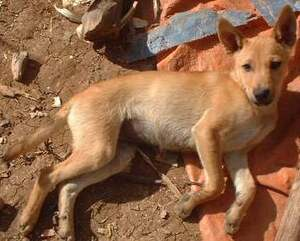
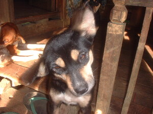
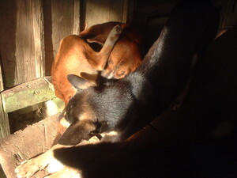
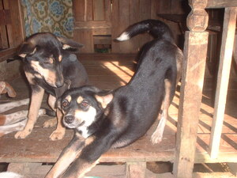
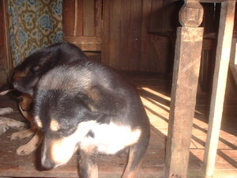
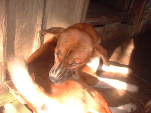

asu      
/ʔasu/
n.
“dog”
1.
n.
Canis_familiaris
dog
Wrd.Gloss: dog
Si Birul ka ngaran te asu ku.
Birul is the name of my dog.
Eng. dog
Tag. áso
Ceb. irò
Ilo.: áso
Tigwanon: ʔasu
Binukid: ʔasu
Kinamigin: ʔasu
WBM: ʔasu
Ilianen: ʔasu
Tagbawa: asu
Obo: tuyang
Cotabato Manobo: tugang
Tasaday: tugang
Sarangani: toyang
Proto: ʔasu or tuyang
OCM: Fauna (136)
DDP: Carnivore (1.6.1.1.2)
Online dict status: -
Usage level: M
v.
for someone (eg-aasu, mig-aasu/in-aasu, agent, eg><ø-rdpCV-) to raise dog (eg-asuwen, in-aasu/mig-aasu, patient, eg><en-, iN-rdpCV-)
Eng. raised, to
Online dict status: -
Usage level: M
2.
adj.
(mangasuwen, mang–en) fond of caring dogs for hunting
Amanan mangasuwen ka amey ney dengan, layun dè egpekeutel te mahintalunan ne babuy.
Before our father used to hunt with dogs, he always catched wild pig.
Eng. fond of caring dog
Tag. mangáso
OCM: Hunting and Trapping (224)
DDP: Hunting birds (6.4.3)
Online dict status: -
Usage level: B
Updated by: RJH,RMU,RUL,QDL,NJK,RAA,QDL,RJH
Last updated: 10/Sep/2015
"asu" in reader "Ka ngaran te me anak"
This page last updated: 28-Dec-2019
Copyright © 2009-2014, Matigsalug Language Christian Association, Inc